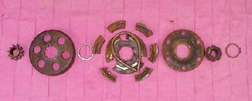
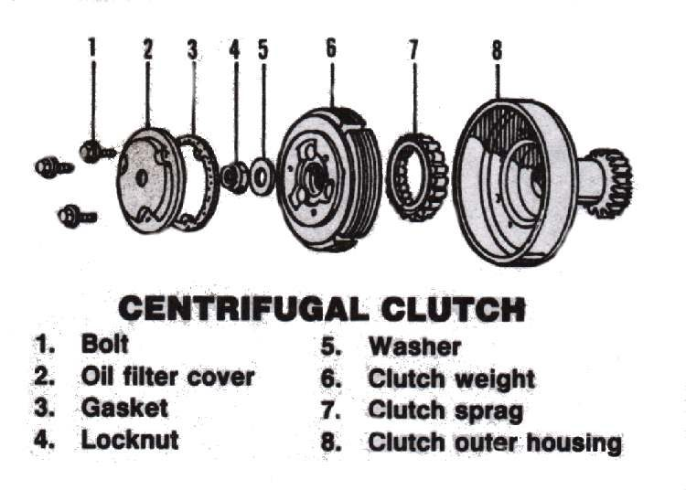

A centrifugal clutch connects the engine to the gearbox by itself when the engine speed rises. It is used on step-through bikes, small commuter bikes and many mini bikes, usually with a gearbox that the rider changes by foot but without a clutch lever.
What it does
There are two common types. In the plate type, weights press steel and fibre plates together as the revs rise, and weak springs part them as the revs fall. In the shoe type, weighted shoes held by springs swing outward and grip the inside of a drum. At idle the springs hold the shoes away, so the bike does not move. Many step-through bikes also have a lever on the gear shaft that frees the clutch fully while changing gear.
Signs it is worn or failing
- Semi-automatic clutch slips or engages roughly.
- Engine revs rise but the bike is slow to pull, or it feels weak on hills.
- Bike creeps at idle or stalls when put in gear (weak or broken return springs).
- Judder or snatch when pulling away, or a rattle from the clutch cover.
When to replace it
The course gives a simple rule: if the plates, shoes or springs are badly worn, replace them. Check the lining thickness against the limit in your bike's manual. Shoes worn to the metal, glazed or burnt linings, broken or stretched springs and a scored drum all need replacement. Change shoes and springs as a set.
What to match when buying
- Engine model and year. Shoe sets, plate packs and springs differ between engines.
- For shoe types, buy shoes, springs and the clutch nut or lock together.
- Check whether the clutch drum and the primary gear are sold as a unit.
Fitting notes
- Workshop job. See Check a semi-automatic or centrifugal clutch.
- Keep oil and grease off the linings. A fibre plate should be oiled lightly (wet type) but a dry shoe must stay dry.
- Use the correct puller or holding tool for the clutch nut. The nut often has a thread that tightens as you turn the engine.
- Scooter belt clutches are a different part: see Scooter clutch and bell.